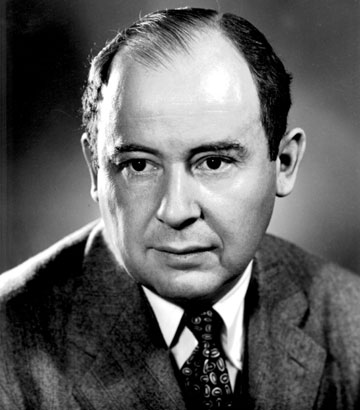

Строение процессоров
Архитектура процессора — количественная составляющая компонентов микроархитектуры вычислительной машины (процессора компьютера) (например, регистр флагов или регистры процессора), рассматриваемая IT-специалистами в аспекте прикладной деятельности.
Существует много архитектур процессора, однако будут разобраны три самых известных архитектуры: фон Неймана, Гарвардская, Параллельная архитектуры.
Архитектура процессоров
Архитектура фон Неймана
Большинство современных процессоров для персональных компьютерах работают на архитектуре фон Неймана . В 1946 году фон Нейман, Бёркс и Голдстайн издали монографию "Предварительное рассмотрение логического устройства электронного вычислительного прибора", которая подробно описала устройство и технические характеристики будущего компьютера, которые позднее стали носить название «архитектура фон Неймана».
Особенностью архитектуры фон Неймана стало то, что инструкции и данные хранятся в одной и той же памяти.
Этапы цикла выполнения:
- Процессор выставляет число, хранящееся в регистре счётчика комманд, на шину адреса и отдаёт памяти команду чтения.
- Выставленное число является для памяти адресом. Память, получив адрес и команду чтения, выставляет содержимое, хранящееся по этому адресу, на шину данных и сообщает о готовности.
- Процессор получает число число с шины данных, интерпретирует его как команду из своей системы комманд и выполняет её.
- Если последняя команда не является командой перехода, процессор увеличивает на единицу (в предположении, что длина каждой команды равна единице) число, хранящееся в счётчике команд; в результате там образуется адрес следующей команды.
- Если последняя команда не является командой перехода, процессор увеличивает на единицу (в предположении, что длина каждой команды равна единице) число, хранящееся в счётчике команд; в результате там образуется адрес следующей команды.
Данный цикл выполняется неизменно, и именно он называется процессом, откуда и произошло название процессора.
Во время процесса устройство считывает последовательность комманд из памяти и выполняет их. Такая последовательность называется программой и представляет собой алгоритм работы процессора. Очерёдность команды изменяется, когда процессор считывает команду перехода. Другой случай изменения процесса может быть точка остановы или переключение в режим прерывания.
Гарвардская архитектура
Выделяют несколько гарвардских архитектур: классическая, модифицированная, расширенная и гибридная с архитектурой фон Неймана.
Операции (такие как сложение и умножение) требуют от любой вычислительной машины несколько действий:
- Выборка двух операндов
- Выбор инструкций и выполнение
- Сохранение результата
Данную идею реализовал Эйкен, и суть этой идеи состояла в том, чтобы физически разделить линии передачи команд и данных. В его первом компьютере Mark I для хранений инструкций использовалась перфорированная лента, а для работы с данными - электромеханические регистры. Это позволяло одновременно пересылать и обрабатывать команды и данные, из-за чего компьютер мог работать быстрее.
В отличии от архитектуры фон Неймана, где процессор либо считывает инструкцию, либо записывает или читает единицу данных из памяти, то есть можно делать только одно из этих действий и никак оба одновременно, в гарвардской архитектуре эти две операции можно выполнять одновременно без кэш-памяти. Таким образом, компьютер на гарвардской архитектуре может работать быстрее чем на архитектуре фон Неймана.
Однако у такой архитектуры есть недостаток - это высокая стоимость. При разделении каналов передачи данных и команд на кристалле кристалл должен иметь в 2 раза больше интерфейсных выводов, так как шина адресов и шина данных составляла большую часть процессора. Проблему решили тем, что для внешних данных используется шина адресов и шина данных, а для внутренних данных использовать те же шины, но с дополнительной шиной команд. Такая архитектура называлась модифицированной гарвардской архитектурой.
В расширенной гарвардской архитектуре использовалась кэш-памяти для хранения инструкций, следовательно обе шины становятся свободными для передачи двух операндов одновременно.
В гибридных гарвардских архитектур (их было несколько) сочетались достоинства как гарвардской архитектуре, так и в архитектуре фон Неймана. Например CISC-процессоры обладают раздельной кэш памятью для команд и данных, так они получают и команду за один такт. Ядро аппаратно гарвардское, но программно оно фон Неймана.
Параллельная архитектура
Архитектура фон Неймана имеет один значимый недостаток, так называемое "Узкое горлышко фон Неймана". Суть этого горлышка состоит в том, что процессор фон Неймана последовательный, а значит, что большой массив данных должен по байту пройтись через процессор, даже если над массивом надо провести одну операцию.
Для решения этой проблемы существуют, и разрабатываются новые, параллельные архитектуры. Подобные архитектуры используются в суперкомпьютерах. Примерами таких архитектур являются: SISD, SIMD, MISD, MIMD.